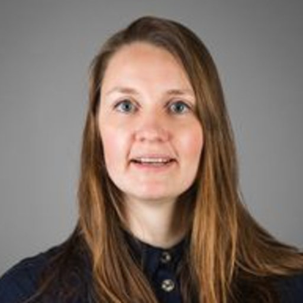

Invited Speakers
Prof Philosophy and Psychology and Linguistics at Yale University
Much of my work thus far has been in the field of moral cognition. I examine the ways in which people’s moral judgments can influence their use of concepts that might initially seem entirely scientific or non-moral (intention, causation, happiness, knowledge). I have also worked on a number of questions about people’s ordinary concepts that fall outside the domain of moral cognition strictly speaking, including questions about people’s understanding of free will and of consciousness.
Professor for Psycholinguistics/Neurolinguistics and Pragmatics, Institute of Cognitive Science, Osnabrück University

I am a professor in the Cognitive Science Institute at Osnabrück University. My research areas are Semantics, Pragmatics and Psycholinguistics/Neurolinguistics. I lead the SPA Lab, which is partly funded by the DFG Emmy Noether program. Visit my lab's website for more information.
Before coming to Osnabrück University, I was a group leader at the University of Potsdam, I held a replacement professorship at Humboldt University (Berlin) and a postdoc position at ZAS (Berlin), funded by the Priority Program Xprag.de. I was a visiting researcher at Macquarie University (Sydney) and Stanford (Palo Alto). Currently, I am an honorary fellow at UCL (London) and Ulster University (Belfast).
I am the editor-in-chief of Palgrave Studies in Pragmatics, Language and Cognition and a member of the Editorial Board of Glossa: Psycholinguistics.
Professeure ordinaire, Centre des sciences cognitives, Université de Neuchâtel
I am a Professor at the Centre for Cognitive Science of the University of Neuchâtel.
My current work lies in the interdisciplinary field of pragmatics, which explores language and communication from a cognitive perspective.
Currently, I am the Principal Investigator of the SNSF Eccellenza Grant "Pragmatics meets epistemic vigilance: Explaining the development of irony comprehension" (2020-2025).
I am also a member of the NCCR Evolving Language. In this context, I work on storytelling and the role of language in fostering human hypercooperation.